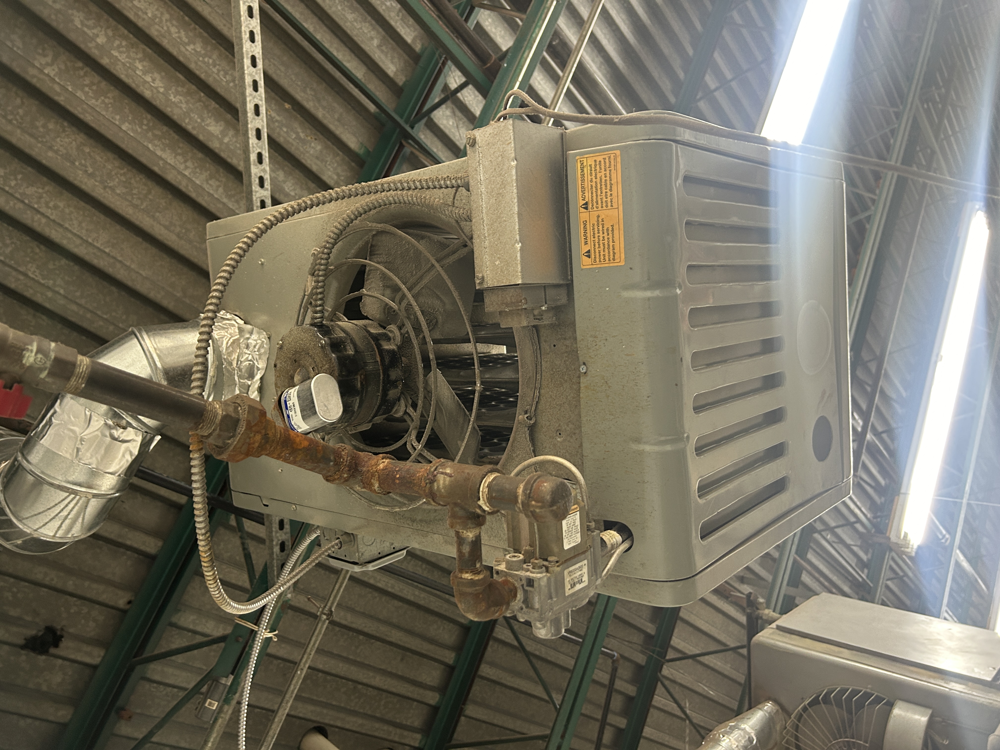

This is something I encountered early on. See, what you got here is a big slow blow fuse, and they didn't have exactly the one I needed at the store, but it was basically the right one. We got that compressor started back up and kept factory downtime to a minimum. These are the scenarios that could break a lesser technician.
this heater needed its transformer replaced so it could call for heat
new transformer who dis lol
for this one the fan stopped spinning, so after verifying everything had power I put a new capacitor on there, but it still didn't work? I reached my hand in there and realized that fan really didn't like to spin. I replaced the motor, but kept those fan blades.

I don't mess with gas lines, but I got a girl Wanda I can call for that kind of work.
Here we have a nice little before and after.
A prominent and delicious restaurant in Brookln got a brand new oven - an electric oven. That was good for me, because like I said, I don't run gas line. I wired that oven up, put a nice 12AWG SO cord on there with a NEMA L6-30P plug. Ideally, and coincidentally, I found what seemed to be the perfectly unused existing run of 240V 30A going nearly where I wanted it. Ran a little conduit, put in a new box, an outlet, there you go.